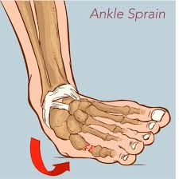

Description: A sprain is a stretching or tearing of ligaments — the tough bands of tissue connecting bones in a joint — most commonly affecting the ankle, knee, or wrist.
Common Causes: Sudden twisting or rolling of a joint, falls, sports injuries, awkward landings, or stepping on uneven surfaces.
Symptoms: Pain around the affected joint, swelling, bruising, limited range of motion, and a popping sensation at the time of injury.
Treatment: Follow the R.I.C.E. method — Rest the joint, apply Ice, use Compression bandaging, and Elevate the limb. Take pain relievers if needed and avoid putting weight on the area.
When to See a Doctor: If the pain is severe, the joint feels unstable or cannot bear weight, swelling is significant, or symptoms do not improve within a few days.
Prevention: Warm up before physical activity, wear supportive footwear, strengthen muscles around joints, and be cautious on uneven surfaces.